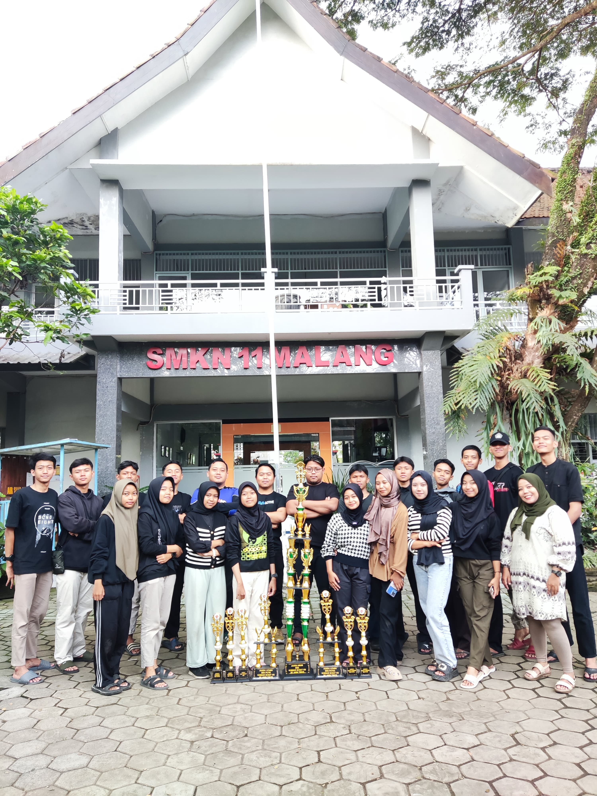
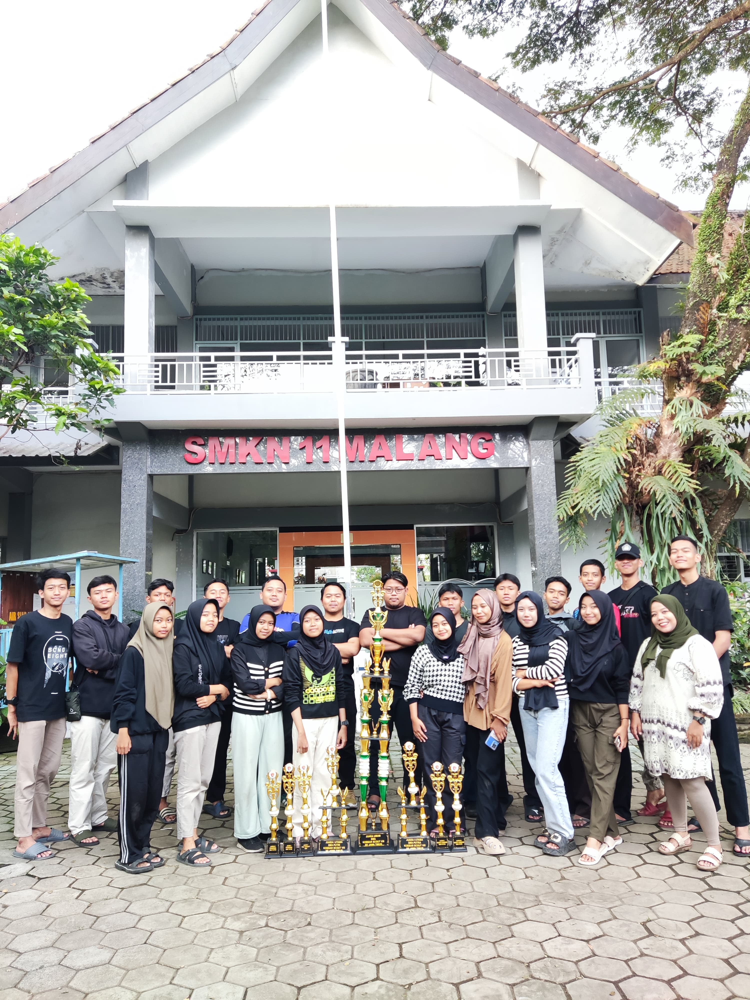

Struktur Organisasi
Kak Taufiq
Pembina Pramuka

Kak Rendra
Pradana Putra

Kak Alif
Pradana Putri
Candradimuka adalah organisasi yang bergerak di bidang kepramukaan, yang tidak bosan bosannya mendapatkan kejuaraan setiap semesternya
Ekstrakurikuler Pramuka adalah wadah bagi siswa-siswi untuk mengembangkan keterampilan, kepemimpinan, dan karakter melalui berbagai kegiatan pramuka yang menyenangkan dan edukatif.
Kak Taufiq
Pembina Pramuka
Kak Rendra
Pradana Putra
Kak Alif
Pradana Putri
 
